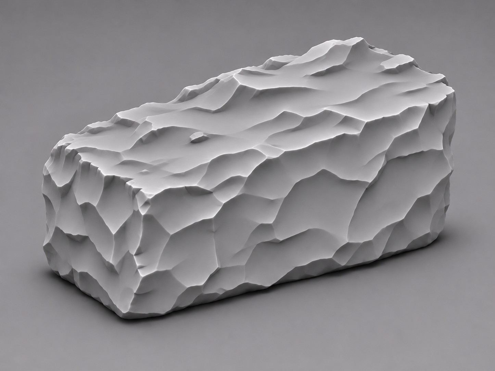
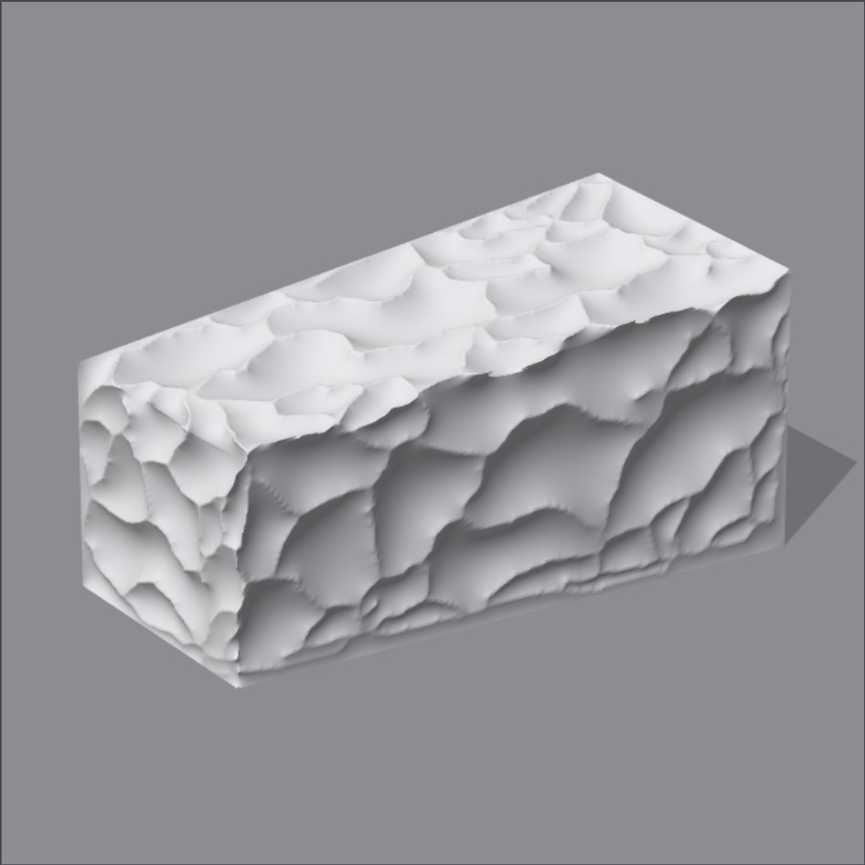

<title>Rock Up Close</title>
<meta name="claude:viewport-fit-sides" content="cover">
<style>
/* Layout: the reference and our view as two equal squares, side by side on a desk, stacked on a phone. Nothing else on the page. */
:root{--bg:#eceff2;--rule:#c8cfd8;--stage:#8c8c91;color-scheme:light}
@media (prefers-color-scheme:dark){:root:not([data-theme="light"]){--bg:#12161b;--rule:#303945;color-scheme:dark}}
:root[data-theme="dark"]{--bg:#12161b;--rule:#303945;color-scheme:dark}
*{box-sizing:border-box}
body{margin:0;background:var(--bg);padding-left:max(16px,env(safe-area-inset-left,0px));padding-right:max(16px,env(safe-area-inset-right,0px))}
main{max-width:1500px;margin:0 auto;padding-block:16px 24px}
.duo{display:grid;grid-template-columns:1fr 1fr;gap:16px}
@media (max-width:760px){.duo{grid-template-columns:1fr}}
.box{position:relative;aspect-ratio:1/1;width:100%;max-width:100%;border:1px solid var(--rule);background:var(--stage);overflow:hidden}
.box>*{position:absolute;inset:0;width:100%;height:100%;max-width:none;display:block}
.box>img{object-fit:contain}
.box>canvas{touch-action:none;cursor:grab}
</style>
<main>
  <div class="duo">
    <div class="box"></div>
    <div class="box" id="stage"><canvas id="view" aria-label="Our model, drawn anew: the same block with every face broken into shallow dishes between crisp ridges that run over its edges, seen from the reference's camera. Drag to turn, double-click to return."></canvas></div>
    <div class="box"></div>
    <div class="box"></div>
  </div>
</main>
<script src="https://cdnjs.cloudflare.com/ajax/libs/three.js/r128/three.min.js"></script>
<script src="https://cdn.jsdelivr.net/npm/three@0.128.0/examples/js/controls/OrbitControls.js"></script>
<script>
(function () {
  'use strict';
  if (typeof THREE === 'undefined') return;   /* three.js did not load: the view stays empty */
  /* The block and the camera were fitted to the reference picture: the block's outline against the rock's outline, and its top
     corners against the rock's (the picture letterboxed in a square, as it is shown). The block tapers: its right end is wider
     and taller than its left. Units are mm; z is up, x is the length, the near long face is -y. */
  const BLOCK = { L: 32.6, left: { W: 14.8, H: 12.25 }, right: { W: 16.9, H: 15.3 } };
  const CAM = { az: -33.75, el: 22.87, dist: 304.8, fov: 8, target: [-4.3, -6.66, 10.53] };
  /* The surface: every face broken into shallow dishes between crisp ridges, as the reference has them. All in mm at true size. */
  const FEEL = {
    seed: 7,
    cell: [2, 4],         /* a dish's half-width, smallest and largest: neighbouring dishes' centres are the sum of theirs apart */
    squash: 1.4,          /* dishes on the sides are this much wider than tall (the picture's are long and low, like courses) */
    edge: .5,             /* a dish is this much more reluctant to reach round onto another face (0: not at all; more keeps the edges whole) */
    stretch: 3,           /* each dish is drawn out along the grain by up to this much (at least 60% of it), so the cells are long and thin */
    grain: 20,            /* a dish's long way is along the block's length (on the ends, across them), turned by up to this many degrees */
    turns: { every: [.6, 1.8], most: 40 },   /* a ridge turns every so many mm, by up to so many degrees */
    round: .5,            /* the block's edges and corners are rounded this much */
    depthPerWidth: 1 / 10,  deepest: 1.9,    /* a dish is as deep as its width times this, never deeper than that */
    fine: .12,            /* the surface's grid step, where the crests are drawn */
    hollow: .14,          /* a dish's bottom is this much darker than its crests */
    tip: .08,             /* and its crests this much brighter, fading out within the outer part of the dish */
    coarse: .42,          /* the grid step of a first, rough solve, which the fine grid then finishes */
    sweeps: { coarse: 120, fine: 15 }   /* passes of the relaxation on each grid */
  };
  const T = THREE, stage = document.getElementById('stage'), canvas = document.getElementById('view');

  /* ---- the block ---- */
  const wAt = (a) => BLOCK.left.W + (BLOCK.right.W - BLOCK.left.W) * a, hAt = (a) => BLOCK.left.H + (BLOCK.right.H - BLOCK.left.H) * a;
  const end = (x, e) => [[x, -e.W / 2, 0], [x, e.W / 2, 0], [x, e.W / 2, e.H], [x, -e.W / 2, e.H]];   /* near bottom, far bottom, far top, near top */
  const A = end(-BLOCK.L / 2, BLOCK.left), B = end(BLOCK.L / 2, BLOCK.right);
  /* the six faces: corners at (a, b) = (0,0) (1,0) (1,1) (0,1), counter-clockwise from outside; top, near, far, left end, right end, bottom */
  const FACES = [[A[3], B[3], B[2], A[2]], [A[0], B[0], B[3], A[3]], [B[1], A[1], A[2], B[2]], [A[1], A[0], A[3], A[2]], [B[0], B[1], B[2], B[3]], [A[1], B[1], B[0], A[0]]];
  const at = (c, a, b) => [0, 1, 2].map(t => (c[0][t] * (1 - a) + c[1][t] * a) * (1 - b) + (c[3][t] * (1 - a) + c[2][t] * a) * b);
  const sub = (p, q) => [p[0] - q[0], p[1] - q[1], p[2] - q[2]], cross = (u, v) => [u[1] * v[2] - u[2] * v[1], u[2] * v[0] - u[0] * v[2], u[0] * v[1] - u[1] * v[0]];
  const len = (v) => Math.hypot(v[0], v[1], v[2]);
  const AREA = FACES.map(c => (len(cross(sub(c[1], c[0]), sub(c[3], c[0]))) + len(cross(sub(c[1], c[2]), sub(c[3], c[2])))) / 2);
  /* the block rounded at its edges and corners by FEEL.round: from a point of the box, the nearest point of the box shrunk by the
     radius (q) and the direction out from it (n); the rounded block's point is q + n * radius */
  function inner(x, y, z, q, n) {
    const r = FEEL.round, a = (x + BLOCK.L / 2) / BLOCK.L, hw = wAt(a) / 2, H = hAt(a), cl = (v, lo, hi) => v < lo ? lo : v > hi ? hi : v;
    q[0] = cl(x, -BLOCK.L / 2 + r, BLOCK.L / 2 - r); q[1] = cl(y, -hw + r, hw - r); q[2] = cl(z, r, H - r);
    const dx = x - q[0], dy = y - q[1], dz = z - q[2], l = Math.hypot(dx, dy, dz) || 1; n[0] = dx / l; n[1] = dy / l; n[2] = dz / l;
  }
  /* a seeded stream (mulberry32): one for the dishes, one of its own for each ridge */
  const stream = (k) => { let a = k >>> 0; return () => { a = (a + 0x6D2B79F5) >>> 0; let t = a; t = Math.imul(t ^ (t >>> 15), t | 1); t ^= t + Math.imul(t ^ (t >>> 7), t | 61); return ((t ^ (t >>> 14)) >>> 0) / 4294967296; }; };

  /* ---- the surface ---- */
  /* A grid over the six faces at about `step` mm, joined into one closed mesh where faces share an edge (faces that share an edge
     share its count of steps). For each point: where it is on the box (box), on the rounded block (base), the way out there (out),
     its neighbours (packed: nbr from off[k] to off[k + 1]) and, per face, the point at each grid place (ids). */
  function grid(step) {
    const nL = Math.round(BLOCK.L / step), nW = Math.round((BLOCK.left.W + BLOCK.right.W) / 2 / step), nH = Math.round((BLOCK.left.H + BLOCK.right.H) / 2 / step);
    const counts = [[nL, nW], [nL, nH], [nL, nH], [nW, nH], [nW, nH], [nL, nW]], index = new Map(), box = [], tris = [], links = [], ids = [];
    const node = (p) => { const k = (Math.round(p[0] * 500) + 32768) * 4294967296 + (Math.round(p[1] * 500) + 32768) * 65536 + (Math.round(p[2] * 500) + 32768);
      let v = index.get(k); if (v === undefined) { v = box.length / 3; index.set(k, v); box.push(p[0], p[1], p[2]); links.push([]); } return v; };
    const link = (a, b) => { if (!links[a].includes(b)) { links[a].push(b); links[b].push(a); } };
    FACES.forEach((c, f) => {
      const [nx, ny] = counts[f], W = nx + 1, g = new Int32Array(W * (ny + 1));
      for (let j = 0; j <= ny; j++) for (let i = 0; i <= nx; i++) g[j * W + i] = node(at(c, i / nx, j / ny));
      for (let j = 0; j <= ny; j++) for (let i = 0; i <= nx; i++) { const k = g[j * W + i]; if (i < nx) link(k, g[j * W + i + 1]); if (j < ny) link(k, g[(j + 1) * W + i]); }
      for (let j = 0; j < ny; j++) for (let i = 0; i < nx; i++) { const k = j * W + i; tris.push(g[k], g[k + 1], g[k + W + 1], g[k], g[k + W + 1], g[k + W]); }
      ids.push({ nx: nx, ny: ny, g: g });
    });
    const N = box.length / 3, base = new Float32Array(N * 3), out = new Float32Array(N * 3), q = [0, 0, 0], n = [0, 0, 0];
    for (let k = 0; k < N; k++) { inner(box[3 * k], box[3 * k + 1], box[3 * k + 2], q, n); for (let t = 0; t < 3; t++) { out[3 * k + t] = n[t]; base[3 * k + t] = q[t] + n[t] * FEEL.round; } }
    const off = new Int32Array(N + 1); for (let k = 0; k < N; k++) off[k + 1] = off[k] + links[k].length;
    const nbr = new Int32Array(off[N]); for (let k = 0; k < N; k++) nbr.set(links[k], off[k]);
    return { N: N, box: new Float32Array(box), base: base, out: out, tris: new Uint32Array(tris), off: off, nbr: nbr, ids: ids };
  }
  const fine = grid(FEEL.fine), coarse = grid(FEEL.coarse);
  /* each fine point read from the coarse grid: the four coarse points around it on its face, and their weights */
  const from = new Int32Array(fine.N * 4), weight = new Float32Array(fine.N * 4);
  fine.ids.forEach((F, f) => { const C = coarse.ids[f], W = F.nx + 1, CW = C.nx + 1;
    for (let j = 0; j <= F.ny; j++) for (let i = 0; i <= F.nx; i++) {
      const x = i / F.nx * C.nx, y = j / F.ny * C.ny, i0 = Math.min(C.nx - 1, x | 0), j0 = Math.min(C.ny - 1, y | 0), u = x - i0, v = y - j0, k = F.g[j * W + i] * 4;
      from[k] = C.g[j0 * CW + i0]; from[k + 1] = C.g[j0 * CW + i0 + 1]; from[k + 2] = C.g[(j0 + 1) * CW + i0]; from[k + 3] = C.g[(j0 + 1) * CW + i0 + 1];
      weight[k] = (1 - u) * (1 - v); weight[k + 1] = u * (1 - v); weight[k + 2] = (1 - u) * v; weight[k + 3] = u * v;
    } });
  /* distance as the dishes see it: height counts squash times, so a dish on a side is wider than tall */
  const md = (x, y, z, c) => Math.hypot(x - c.x, y - c.y, (z - c.z) * FEEL.squash);
  /* Dish centres are thrown at random over every face but the bottom, each with its own half-width (r), kept only where they clear
     the ones before them. The largest a throw may draw shrinks from the biggest to the smallest as the throws go on, so the big
     dishes are placed first and the small ones fill the gaps between them. Each has a long way across the surface (a), the block's
     grain give or take FEEL.grain, and a share of the stretch (pull). */
  const TRIES = 6000, dishes = (() => {
    const rnd = stream(FEEL.seed), total = AREA[0] + AREA[1] + AREA[2] + AREA[3] + AREA[4], C = [], q = [0, 0, 0], n = [0, 0, 0], [lo, hi] = FEEL.cell;
    for (let tries = 0; tries < TRIES; tries++) {
      let rr = rnd() * total, f = 0; for (; f < 4; f++) if ((rr -= AREA[f]) < 0) break;
      const most = hi - (hi - lo) * (tries / TRIES) ** 2, p = at(FACES[f], rnd(), rnd()), r = lo + rnd() * (most - lo), c = { x: p[0], y: p[1], z: p[2], r: r };
      if (C.every(d => md(c.x, c.y, c.z, d) >= r + d.r)) { c.spin = rnd(); c.pull = rnd(); C.push(c); }
    }
    C.forEach(c => { inner(c.x, c.y, c.z, q, n); const g = Math.abs(n[0]) > .7 ? [0, 1, 0] : [1, 0, 0], gn = g[0] * n[0] + g[1] * n[1] + g[2] * n[2];
      const e1 = [g[0] - gn * n[0], g[1] - gn * n[1], g[2] - gn * n[2]], l1 = len(e1), u = e1.map(v => v / l1), w = cross(n, u), t = (2 * c.spin - 1) * FEEL.grain * Math.PI / 180;
      c.a = [0, 1, 2].map(i => u[i] * Math.cos(t) + w[i] * Math.sin(t)); c.n = n.slice(); c.pull = .6 + .4 * c.pull; });
    return C;
  })();
  /* each point's K nearest dishes, by distance less half-width (the stretch and the edges only reorder these) */
  const K = 5;
  function nearest(G) {
    const out = new Uint16Array(G.N * K), best = new Float64Array(K), id = new Int32Array(K), b = G.box;
    for (let k = 0; k < G.N; k++) {
      best.fill(Infinity); const x = b[3 * k], y = b[3 * k + 1], z = b[3 * k + 2];
      for (let i = 0; i < dishes.length; i++) { const v = md(x, y, z, dishes[i]) - dishes[i].r; if (v >= best[K - 1]) continue;
        let s = K - 1; while (s > 0 && best[s - 1] > v) { best[s] = best[s - 1]; id[s] = id[s - 1]; s--; } best[s] = v; id[s] = i; }
      out.set(id, k * K);
    }
    return out;
  }
  fine.near = nearest(fine); coarse.near = nearest(coarse);

  /* The ridge between two dishes is a walk along the even line between them, from its middle outward both ways: straight runs
     between turns (FEEL.turns), each turn mostly steering back toward the even line, so a ridge zigzags without wandering off.
     Kept as its offset toward the lower-numbered dish, every DT mm along the line. */
  const SPAN = 24, DT = .05, NS = Math.round(2 * SPAN / DT) + 1, MID = (NS - 1) / 2, DEG = Math.PI / 180, STEEP = 70 * DEG;
  const walks = new Map();
  function walk(a, b) {
    const key = a * 4096 + b; let w = walks.get(key); if (w) return w;
    const r = stream(FEEL.seed * 7919 + a * 104729 + b * 1299709), g = FEEL.turns, gap = () => g.every[0] + (g.every[1] - g.every[0]) * r(), start = (2 * r() - 1) * g.most * DEG;
    w = new Float32Array(NS);
    for (const dir of [1, -1]) { let y = 0, phi = dir * start, next = gap();
      for (let k = 1; k <= MID; k++) {
        y += Math.tan(phi) * DT; w[MID + dir * k] = y;
        if ((next -= DT) > 0) continue; next = gap();
        const t = g.most * DEG * (.5 + .5 * r()), back = -Math.atan(y / 4), sign = r() < .6 ? Math.sign(back - phi) || 1 : r() < .5 ? -1 : 1;
        phi += sign * t; if (Math.abs(phi) > STEEP) phi -= 2 * sign * t; phi = Math.max(-STEEP, Math.min(STEEP, phi));
      } }
    walks.set(key, w); return w;
  }
  /* how far a point is outside dish i, in mm (negative inside it): its distance less the dish's half-width; along the dish's direction distance counts less, by its stretch; and
     where the block's way out at the point (nx, ny, nz) turns away from the dish's own, more, by FEEL.edge */
  function reach(x, y, z, i, nx, ny, nz) {
    const c = dishes[i], turn = 1 + FEEL.edge * (1 - nx * c.n[0] - ny * c.n[1] - nz * c.n[2]), dx = x - c.x, dy = y - c.y, dz = (z - c.z) * FEEL.squash, al = dx * c.a[0] + dy * c.a[1] + dz * c.a[2], long = 1 + (FEEL.stretch - 1) * c.pull;
    return Math.sqrt(Math.max(0, dx * dx + dy * dy + dz * dz - al * al) + (al / long) * (al / long)) * turn - c.r;
  }
  /* how far, in mm, a point lies on dish i's side of its ridge with dish j (negative: on j's side). vi, vj: the point's reach to
     each; n: the block's way out at the point, which with the line between the two centres gives the direction along the ridge */
  function margin(x, y, z, nx, ny, nz, i, j, vi, vj) {
    const lo = i < j, a = lo ? i : j, b = lo ? j : i, P = dishes[a], Q = dishes[b];
    const toA = ((lo ? vj : vi) - (lo ? vi : vj)) / 2, ex = Q.x - P.x, ey = Q.y - P.y, ez = Q.z - P.z;
    const ux = ny * ez - nz * ey, uy = nz * ex - nx * ez, uz = nx * ey - ny * ex, ul = Math.hypot(ux, uy, uz) || 1;
    const t = ((x - (P.x + Q.x) / 2) * ux + (y - (P.y + Q.y) / 2) * uy + (z - (P.z + Q.z) / 2) * uz) / ul;
    const f = Math.max(0, Math.min(NS - 1.001, MID + t / DT)), s = f | 0, w = walk(a, b), m = toA - (w[s] + (w[s + 1] - w[s]) * (f - s));
    return lo ? m : -m;
  }
  /* Each point of a grid: its dish, of its K nearest the one that beats each other in turn, nearest first. known(k), if given,
     gives a point's dish when it is already certain, or -1. */
  function partition(G, dish, known) {
    const b = G.box, o = G.out, v = new Float64Array(K), c = new Int32Array(K);
    for (let k = 0; k < G.N; k++) {
      if (known) { const d = known(k); if (d >= 0) { dish[k] = d; continue; } }
      const x = b[3 * k], y = b[3 * k + 1], z = b[3 * k + 2], nx = o[3 * k], ny = o[3 * k + 1], nz = o[3 * k + 2];
      for (let s = 0; s < K; s++) { c[s] = G.near[k * K + s]; v[s] = reach(x, y, z, c[s], nx, ny, nz); }
      let w = 0; for (let s = 1; s < K; s++) if (margin(x, y, z, nx, ny, nz, c[w], c[s], v[w], v[s]) < 0) w = s;
      dish[k] = c[w];
    }
  }
  /* The relaxation, on any grid: the free points of a skin (xyz) pulled toward their neighbours' mean, so it goes taut between its
     pinned points (on a face nothing changes; where a dish runs over the block's edge or corner it is cut straight across, a flat
     facet); and beside it a membrane (sag), pinned at zero, sagging the same everywhere, so each dish is one smooth hollow. */
  function relax(G, pinned, xyz, sag, sweeps) {
    const off = G.off, nbr = G.nbr;
    for (let it = 0; it < sweeps; it++) for (let k = 0; k < G.N; k++) {
      if (pinned[k]) continue; const a = off[k], b = off[k + 1], m = b - a; let x = 0, y = 0, z = 0, h = 0;
      for (let e = a; e < b; e++) { const o = nbr[e]; x += xyz[3 * o]; y += xyz[3 * o + 1]; z += xyz[3 * o + 2]; h += sag[o]; }
      xyz[3 * k] += 1.8 * (x / m - xyz[3 * k]); xyz[3 * k + 1] += 1.8 * (y / m - xyz[3 * k + 1]); xyz[3 * k + 2] += 1.8 * (z / m - xyz[3 * k + 2]); sag[k] += 1.8 * ((h + 1) / m - sag[k]);
    }
  }
  /* The surface:
     1. A rough solve on the coarse grid: each point's dish, pinned where it meets another dish, relaxed from the rounded block.
     2. The fine grid: each point's dish; pinned on one side of every ridge (the lower-numbered dish's points that touch another
        dish), so a ridge is a single line; the pinned points on the rounded block, each slid onto its ridge so the grid's
        depth next to a ridge set by the point's own distance to it (below); the bottom pinned flat. The free points start from the coarse answer read at their place (the sag scaled to fine
        steps), and a few fine passes finish it: what the rough solve got wrong is all small-scale, which is what passes undo fast.
     3. Each dish's deepest sag gives its width (a round dish of radius R sags R² / 4, in grid steps), so its full depth, and its
        sag over that deepest is its profile: depth = full depth times profile. The dish
        goes down along the taut skin's way out (read from the coarse grid, where it is smooth). */
  const C = coarse, F = fine, cDish = new Uint16Array(C.N), cPin = new Uint8Array(C.N), cXyz = new Float32Array(C.N * 3), cSag = new Float32Array(C.N);
  const fDish = new Uint16Array(F.N), fPin = new Uint8Array(F.N), xyz = new Float32Array(F.N * 3), sag = new Float32Array(F.N), top = new Float32Array(dishes.length);
  const pos = new Float32Array(F.N * 3), shade = new Float32Array(F.N * 3), geo = new T.BufferGeometry(), Q = [0, 0, 0], O = [0, 0, 0];
  geo.setAttribute('position', new T.BufferAttribute(pos, 3)); geo.setIndex(new T.BufferAttribute(F.tris, 1));
  geo.setAttribute('color', new T.BufferAttribute(shade, 3));
  const onBlock = (p, k) => { inner(p[3 * k], p[3 * k + 1], p[3 * k + 2], Q, O); for (let t = 0; t < 3; t++) p[3 * k + t] = Q[t] + O[t] * FEEL.round; };
  const cOut = new Float32Array(C.N * 3), dir = new Float32Array(F.N * 3);
  /* a fine point's dish is certain when the four coarse points around it are of one dish and none is on a ridge */
  const settled = (k) => { const a = from[4 * k], d = cDish[a]; for (let q = 4 * k; q < 4 * k + 4; q++) { const c = from[q]; if (cPin[c] || cDish[c] !== d) return -1; } return d; };
  /* the whole surface, steps 1 to 3, and the direction each point's dish goes down (the taut skin's way out, read from the coarse
     grid) */
  function shape() {
    partition(C, cDish, null);
    for (let k = 0; k < C.N; k++) { cPin[k] = C.box[3 * k + 2] < 1e-6 ? 2 : 0; if (!cPin[k]) for (let e = C.off[k]; e < C.off[k + 1]; e++) if (cDish[C.nbr[e]] !== cDish[k]) { cPin[k] = 1; break; } }
    cXyz.set(C.base); cSag.fill(0); relax(C, cPin, cXyz, cSag, FEEL.sweeps.coarse);
    cOut.fill(0); const t = C.tris;
    for (let i = 0; i < t.length; i += 3) { const a = 3 * t[i], b = 3 * t[i + 1], c = 3 * t[i + 2];
      const ux = cXyz[b] - cXyz[a], uy = cXyz[b + 1] - cXyz[a + 1], uz = cXyz[b + 2] - cXyz[a + 2], vx = cXyz[c] - cXyz[a], vy = cXyz[c + 1] - cXyz[a + 1], vz = cXyz[c + 2] - cXyz[a + 2];
      const nx = uy * vz - uz * vy, ny = uz * vx - ux * vz, nz = ux * vy - uy * vx; cOut[a] += nx; cOut[a + 1] += ny; cOut[a + 2] += nz; cOut[b] += nx; cOut[b + 1] += ny; cOut[b + 2] += nz; cOut[c] += nx; cOut[c + 1] += ny; cOut[c + 2] += nz; }
    partition(F, fDish, settled);
    for (let k = 0; k < F.N; k++) { fPin[k] = F.box[3 * k + 2] < 1e-6 ? 2 : 0; if (!fPin[k]) for (let e = F.off[k]; e < F.off[k + 1]; e++) if (fDish[F.nbr[e]] > fDish[k]) { fPin[k] = 1; break; } }
    const scale = (FEEL.coarse / FEEL.fine) ** 2;
    for (let k = 0; k < F.N; k++) {
      let x = 0, y = 0, z = 0, h = 0, nx = 0, ny = 0, nz = 0;
      for (let q = 4 * k; q < 4 * k + 4; q++) { const c = from[q], w = weight[q]; x += w * cXyz[3 * c]; y += w * cXyz[3 * c + 1]; z += w * cXyz[3 * c + 2]; h += w * cSag[c]; nx += w * cOut[3 * c]; ny += w * cOut[3 * c + 1]; nz += w * cOut[3 * c + 2]; }
      const l = Math.hypot(nx, ny, nz) || 1; dir[3 * k] = nx / l; dir[3 * k + 1] = ny / l; dir[3 * k + 2] = nz / l;
      if (fPin[k]) { xyz[3 * k] = F.base[3 * k]; xyz[3 * k + 1] = F.base[3 * k + 1]; xyz[3 * k + 2] = F.base[3 * k + 2]; sag[k] = 0; }
      else { xyz[3 * k] = x; xyz[3 * k + 1] = y; xyz[3 * k + 2] = z; sag[k] = h * scale; }
    }
    relax(F, fPin, xyz, sag, FEEL.sweeps.fine);
    top.fill(0); for (let k = 0; k < F.N; k++) if (sag[k] > top[fDish[k]]) top[fDish[k]] = sag[k];
    /* Beside a ridge the grid only knows which side a point is on, so its crest would follow the grid's staircase. There a point's
       depth is its distance to the ridge (its smallest margin, which follows the walk between grid points) times the dish wall's
       slope at its rim (a dish of full depth D and width W, curved as the sag curves, leaves its rim at 4D / W), and the crest
       runs where the ridge does; never deeper than the sag gives, in case the nearest margin is to the wrong ridge. */
    const v = new Float64Array(K), c = new Int32Array(K);
    for (let k = 0; k < F.N; k++) {
      const w = fDish[k], tp = top[w], wide = 4 * Math.sqrt(tp) * FEEL.fine, full = Math.min(FEEL.deepest, wide * FEEL.depthPerWidth);
      let d = tp > 0 && sag[k] > 0 ? full * sag[k] / tp : 0, edge = false;
      if (fPin[k] !== 2) for (let e = F.off[k]; e < F.off[k + 1]; e++) if (fDish[F.nbr[e]] !== w) { edge = true; break; }
      if (edge && wide > 0) {
        const x = F.box[3 * k], y = F.box[3 * k + 1], z = F.box[3 * k + 2], nx = F.out[3 * k], ny = F.out[3 * k + 1], nz = F.out[3 * k + 2], vw = reach(x, y, z, w, nx, ny, nz);
        let m = Infinity; for (let s2 = 0; s2 < K; s2++) { const j = F.near[k * K + s2]; if (j === w) continue; const mj = margin(x, y, z, nx, ny, nz, w, j, vw, reach(x, y, z, j, nx, ny, nz)); if (mj < m) m = mj; }
        d = Math.min(d, Math.max(0, m) * 4 * full / wide);
      }
      /* a dish darkens toward its bottom, as a hollow gets less of the light around it, and brightens a little at its crests */
      const p = full > 0 ? d / full : 0, q = 1 - p, c = 1 - FEEL.hollow * p * p + FEEL.tip * q * q * q * q;
      for (let t = 0; t < 3; t++) { pos[3 * k + t] = xyz[3 * k + t] - dir[3 * k + t] * d; shade[3 * k + t] = c; }
    }
    geo.attributes.position.needsUpdate = true; geo.attributes.color.needsUpdate = true; geo.computeVertexNormals(); geo.computeBoundingSphere();
  }

  /* ---- the view ---- */
  const renderer = new T.WebGLRenderer({ canvas: canvas, antialias: true, alpha: true });
  const scene = new T.Scene(), cam = new T.PerspectiveCamera(CAM.fov, 1, 10, 2000); cam.up.set(0, 0, 1);
  const controls = new T.OrbitControls(cam, canvas); controls.enablePan = false; controls.addEventListener('change', draw);
  function home() {
    const a = CAM.az * Math.PI / 180, e = CAM.el * Math.PI / 180, t = CAM.target;
    cam.position.set(t[0] + CAM.dist * Math.cos(e) * Math.sin(a), t[1] - CAM.dist * Math.cos(e) * Math.cos(a), t[2] + CAM.dist * Math.sin(e));
    controls.target.set(t[0], t[1], t[2]); controls.update();
  }
  const block = new T.Mesh(geo, new T.MeshStandardMaterial({ color: 0xececee, roughness: 1, metalness: 0, vertexColors: true })); scene.add(block);
  /* the block floats, with no ground and no shadows. A soft light all round, part of it even and part coming from above, behind and
     to the right, so the far side has some shape too; and one lamp out past its left end, low and a little in front, pointing at the
     near left top corner, so its light rakes along the top and the near face and the dishes show by their shading */
  const fill = new T.DirectionalLight(0xffffff, .2); fill.position.set(50, 60, 45);
  scene.add(new T.AmbientLight(0xffffff, .38), new T.HemisphereLight(0xffffff, 0x8c8c90, .2), fill);
  const lamp = new T.SpotLight(0xffffff, .34, 0, Math.PI / 4, 1); lamp.position.set(-72, -16, 34); lamp.target.position.set(-16.3, -7.4, 12.25);
  scene.add(lamp, lamp.target);
  function draw() { renderer.render(scene, cam); }
  function size() { const w = stage.clientWidth, h = stage.clientHeight; renderer.setPixelRatio(Math.min(window.devicePixelRatio || 1, 2)); renderer.setSize(w, h, false); cam.aspect = w / h; cam.updateProjectionMatrix(); draw(); }
  canvas.addEventListener('dblclick', () => { home(); draw(); });

  shape(); home(); size();
  if ('ResizeObserver' in window) new ResizeObserver(size).observe(stage); else window.addEventListener('resize', size);
})();
</script>
